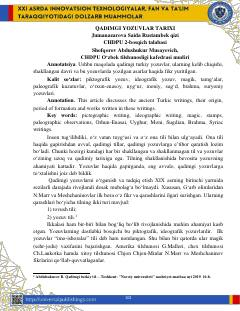

QYQadimgi turkiy yozuvlar tarixi, ularning kelib chiqishi va rivojlanish bosqichlari haqida ilmiy maqola.
Ushbu maqola qadimgi turkiy yozuvlarning kelib chiqishi, shakllanish davri va ularda bitilgan tarixiy asarlar haqida ilmiy ma'lumot beradi. Unda o'rxun-enasoy, uyg'ur va boshqa qadimiy yozuv tizimlarining xususiyatlari hamda ularning til tarixidagi o'rni tahlil qilinadi.